新手教學

新手教學
點擊網站右上角「登入/註冊」，並點擊輸入帳號、密碼欄位右下方的「忘記密碼」，按照步驟操作即可進入取回密碼程序。
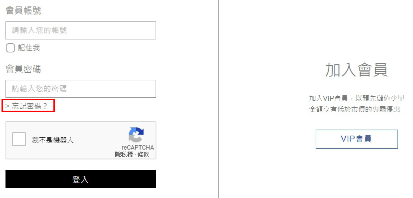 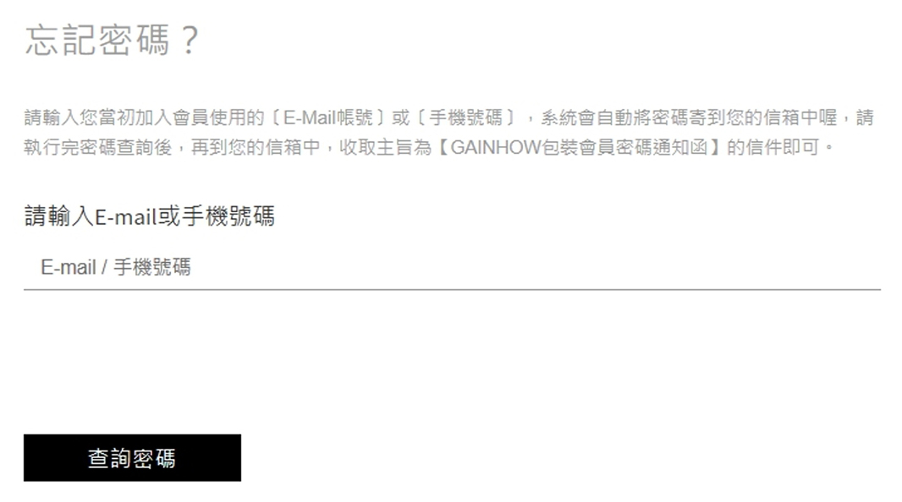登入會員後，點擊右上角「您的會員名稱（帳號）」後會出現會員專區，即可至會員資料項目中變更您的密碼。
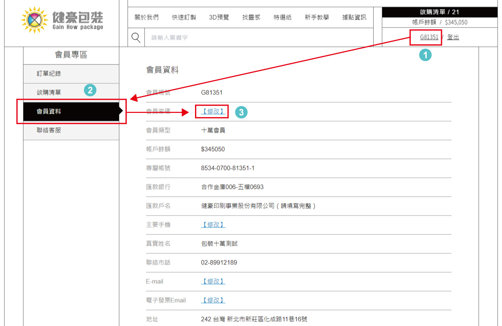① 於快速訂製頁面下，選擇盒型後，點擊我要訂製。
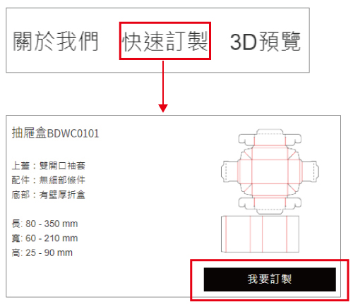② 填入長寬高尺寸、加工工藝後，下載刀模檔案佈圖。
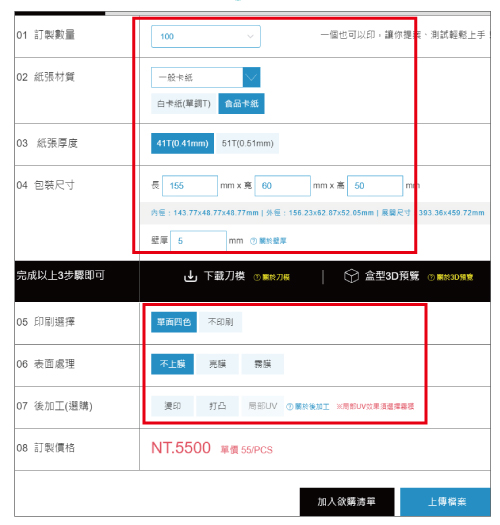③ 上傳佈好圖的設計稿。
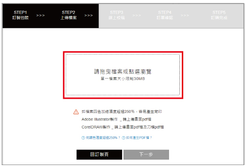④ 系統自動校稿。
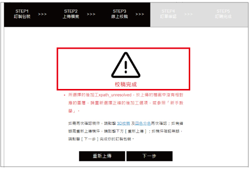⑤ 可點擊線上即時3D預覽校稿與分色校稿。
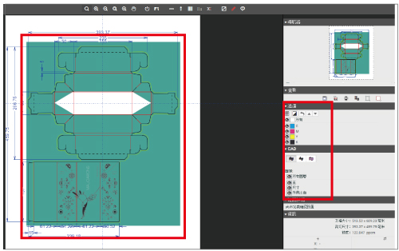⑥ 警告提醒。
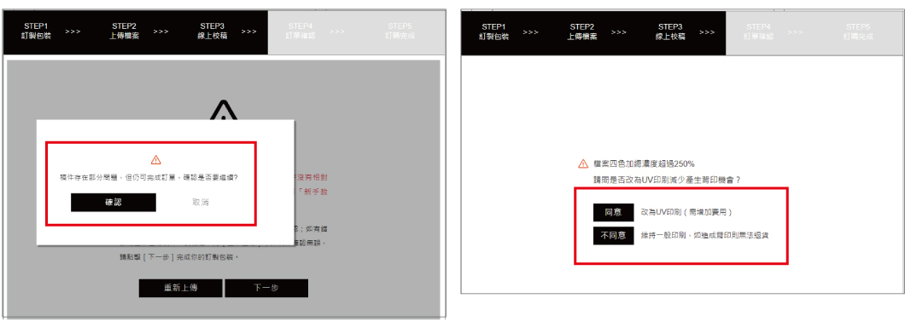⑦ 提供自行輸入條件與實際製作條件比對、訂單總金額、訂單人資訊。
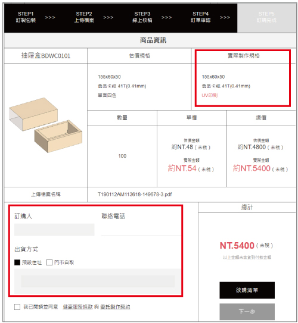⑧ 訂單建立完成，進入製程。
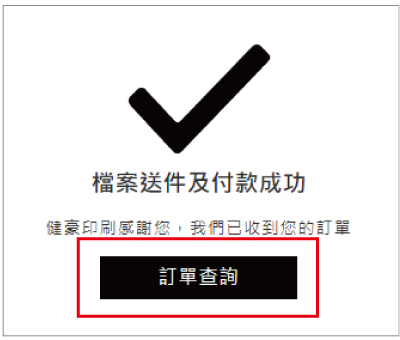① 於快速訂製頁面下，選擇盒型後，點擊我要訂製，填入長寬高尺寸。
② 點擊下載刀模按鈕，另存刀模檔案(標準化PDF)。
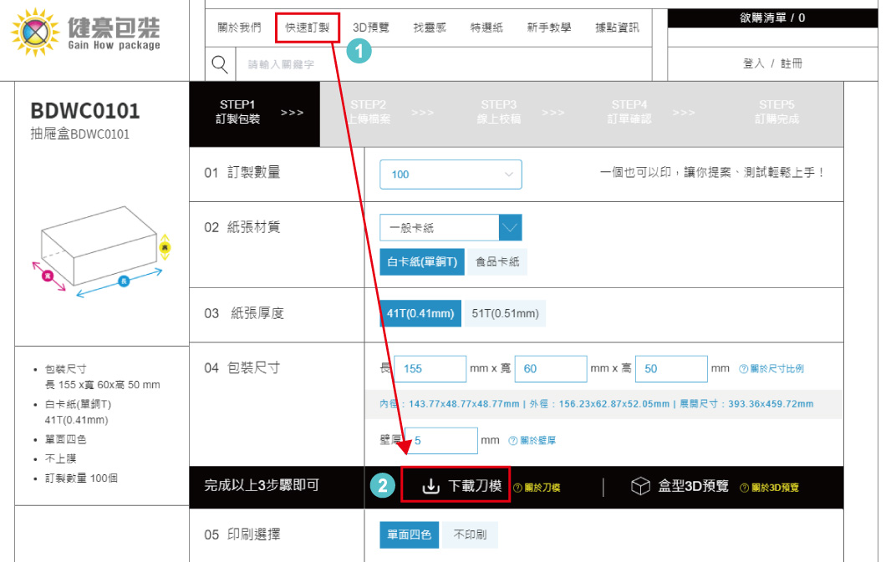發印時需輸入折扣碼才可抵扣刀模費用，若下單訂購時未輸入折扣碼則視同放棄。
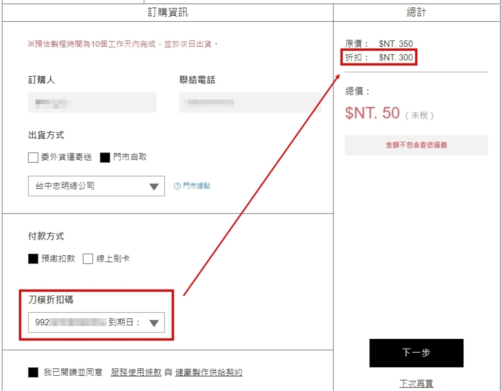① 點擊快速訂製頁面，選擇盒型並輸入尺寸。
② 點擊盒型3D預覽，另開起新視窗3D預覽。
③ 與④可切換觀看模式。
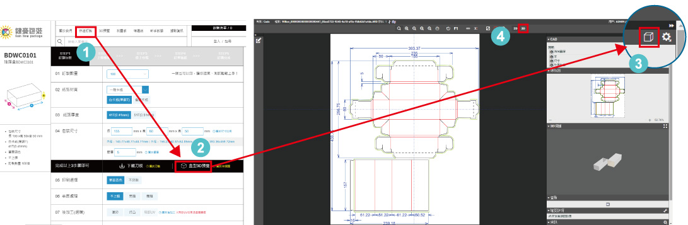① 在分頁按鈕中點選3D預覽、或視窗右側的3D預覽浮動按鈕。
② 彈跳出上傳檔案視窗並上傳設計稿檔案(標準化PDF)。
③ 上傳完畢後另開啟新視窗3D預覽。
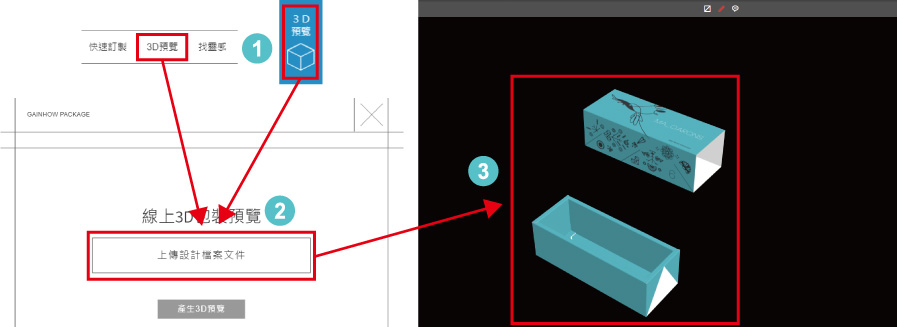① 於快速訂製頁面下，選擇盒型後，點擊我要訂製，依照步驟完成Step01、Step02訂製包裝頁面，將檔案拖曳到虛線框內，或點擊虛線框任一處彈跳出新視窗，選擇要上傳的檔案。
② 最後等待檔案上傳完成。
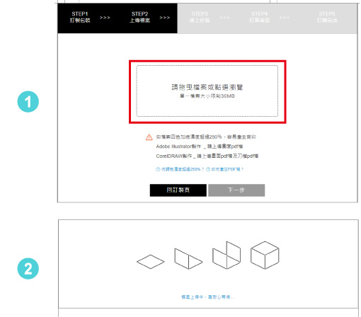我們有19款盒型成型教學影片，每個盒形的商品描述裡有影片教學。
1、50、100、200、300、400、500、700、1,000，1,000以上為1,000的倍數。
① 將物品平放水平於桌面上，測量物品的三個邊長尺寸，長(L)、寬(Ｗ)、高(H)，以此量得尺寸依順序輸入訂製頁面欄位製作。
② 若是較方正硬挺的商品，輸入盒子尺寸時建議可放寬 2mm。
③ 若是軟性材質或不規則商品，建議可放寬 3mm。
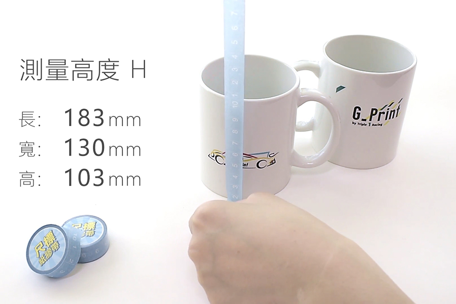以包裝的保護性、方便性等基本功能為挑選適合的盒型主要條件。 建議可以從關鍵字及找靈感中案例來作為參考。
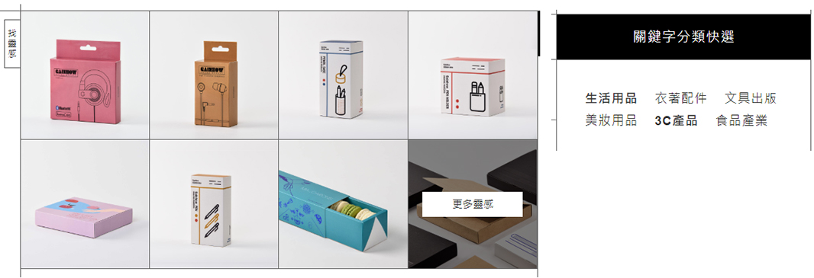可依據商品想呈現的展示效果，來挑選紙材、製作印面設計。可參考特選紙頁面說明。
每個盒型都會有成型教學影片及分解動作說明。
每個盒型皆有不同的最大最小值限制，在訂製頁面填寫數值時，如填寫超過範圍值限制，系統會跳出提醒，請依提醒要求填寫數值。
包裝盒展開尺寸最大不可超過730mm*515mm的尺寸限制
1、50、100、200、300、400、500、700、1,000，1,000以上為1,000的倍數。
目前無提供打樣服務，可以利用線上3D預覽功能來確認檔案內容是否正確。
未上膜的紙張通常毛細纖維較大，局部光易被吸入於紙張纖維內，造成局部光效果不佳。
印刷機台會因不同訂製數量有所調整，所以不同印刷機台對於色彩的表現也都會有些微的差異。
利用高壓、高溫，將箔紙依照燙金版的印紋燙在需求位置。因此製作此加工時需製版並加收製版費，為中、高檔設計時，常用的重要表現手法。

將紙張壓出浮雕狀圖文的加工方法。擁有強烈的立體視覺效果和良好的觸感。通常是搭配簡約設計或特殊紙材，讓凹凸工藝明顯突出，增加整體質感。需製版並需加收版費。
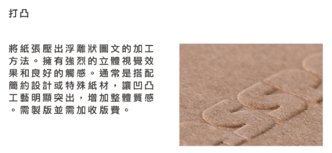常應用於精緻成品上，增加花紋圖樣或文字的立體效果，用途多元，為市面上普遍的上光方式。
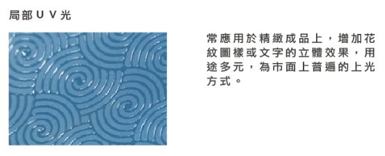需要為本網站內所下載的標準化PDF刀模檔案，且不能增減修改刀模線，無論使用illustrator或是CorelDRAW軟體編修，輸出格式必須為PDF 1.6版本儲存檔案。或匯入ai預設集「健豪包裝網PDF」後，儲存PDF時於Adobe PDF預設(A)選項中，選取「健豪包裝網PDF」預設直接存檔。「健豪包裝網PDF」ai預設集下載
無論使用illustrator或是CorelDRAW軟體，開檔模式必須是以點擊滑鼠右鍵開啟編輯軟體，不能以置入方式執行。
① 所有字體皆必須轉曲線或建立成外框字，清除不需要用到的文字雜點，以避免字體遺失。
② 文字的字級建議不可低於7級字，以避免過細無法成像。反白字因網點擴散原因，使原來的反白位置更細小，易造成看不見的狀況。
① 需使用CMYK，請勿嵌入色彩描述檔。
② 請勿使用Pantone色、自訂特別色及其他色盤的特別色，若有非CMYK填色的物件請轉換為CMYK填色(如RGB,Pantone色)，並自行調整至正確的顏色，以免因色域轉換而產生色差爭議。
由包裝網下載的PDF檔案內出血已設定為3mm，請勿於製稿時更動。
① 新建圖層名稱不限(注意不可使用後加工的保留圖層名)，請在新建圖層上製作稿件內容。
② 製稿時圖層必須分為刀線圖層、後加工圖層、印刷稿圖層，請參照製稿教學及圖層名稱製作。
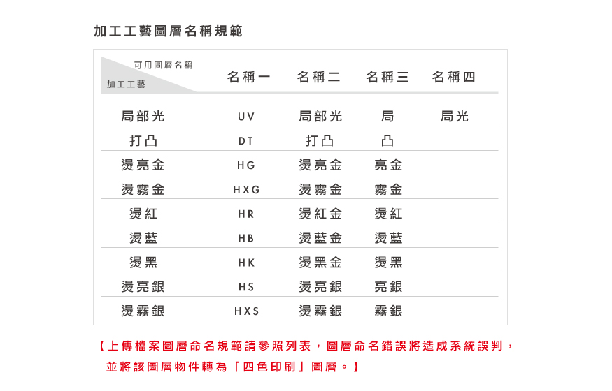① 所有置入圖檔的格式請以tiff、eps兩種格式，圖檔解析度不可低於350ppi，CMYK模式，不可使用gif圖檔格式。
② 所置入的影像檔，必須為嵌入圖檔，以防止發生掉圖或連結錯誤的狀況。
線條設定最細不能低於0.2mm。
打凸最細線條和間距不能低於0.1mm
燙金內容不需要印刷，直接做燙金稿即可；燙金最細線條不能低於0.1mm
局部光不可製作於摺線上,可能導致成型困難及局部光裂痕。
條碼顏色請做K100%，條碼所在區塊底下需反白，否則會影響掃瞄正確性。
在設計灰色時，使用單黑色，避免使用四色灰。
可使用Illustrator、CorelDRAW等軟體製作，不可使用Office文書處理軟體。
不論使用何種編輯軟體,均須以標準化PDF檔案上傳。
沒有限制。
30MB以內
需在包裝網站內上傳,無須續傳軟體。
上傳檔案需符合包裝網製稿要求，若上傳之檔案不符合要求時，將以退件處理。 (為避免責任規屬之判定，本公司不幫客戶修改任何檔案。)
除了是紙張表現因素外，主要原因為印刷色序為K→C→M→Y，先印黑色版後再印其他色版。CMY100 、 CK100 、 MK100 、 YK100 雖然都有 K100 ，印樣卻不黑，便是因為其他顏色的色版疊印的結果。如需印出純黑，請將色塊調成Ｋ100。 提醒：填色K100的色塊或線條，皆為黑色直壓，不能襯有其他顏色，以免造成疊印。如K100+C30或K100+M30的填色一定會疊印,CMYK色濃度總值如超過250%以上,系統將提醒改為UV印刷,以防止背印情況發生。
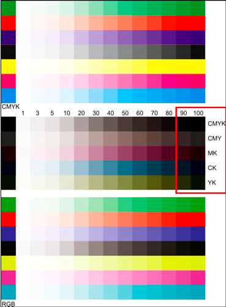① 所有印刷都是四色印刷(CMYK)，請勿以特別色完稿，而影響印刷結果。
② 電腦螢幕顯示器是以RGB色光成像，而印刷品是以CMYK印刷四色模式，因成像原理不同，螢幕顯示與印刷成品必然存在色彩差異。
③ 此外，就算是電腦螢幕，因不同品牌型號及個別色彩設定參數，也會造成顏色觀看上的不同。
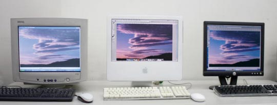① 印刷品的紙張與加工方式： 不同紙張有不同顯色效果，同一個印刷檔印在不同材質上，如銅版紙或道林紙，會造成不同的印刷效果與成色，這是屬於材質的物理特性，若印在有底色的紙張上(如黃牛皮紙)，當然會有更大的色差；另外，在紙張上進行後加工，如上亮膜或霧膜，也會影響成色。 在印製前，可以在主要視覺色上以色票核對建立色彩基準，雖不可能避免印刷色差，但可降低色差風險。
② 重複印刷的印件每次都需附色樣印刷，如遇蘋果綠、深咖啡、紫色、橘色等顏色需多加50~100張放數，才能盡量避免色差。
③ 螢幕或噴墨列印稿的顏色，無法作為印刷顏色樣本，對顏色要求嚴格者，請附樣印刷，否則無法因色差問題退貨。
④ 對顏色要求請先發數位銅版樣或附樣印刷(數位銅版打樣對色的紙張，須同樣為銅版類紙張顏色才準確)；同一檔案在不同次印刷因控墨量問題，色彩都有差距，色差10%左右屬正常，舊檔再印，須附
⑤上正確色樣(在一定時間內在本公司發印的檔案、相同紙張才不會因為氧化變色)印刷供對色之用，且需多加50~100張放數以避免色差過大的問題。
⑥ 舊檔再印稿件，本公司無法從審稿中得知色樣與檔案顏色是否一致。

健豪採用先進製程製作,將縮小批次顏色差異。
請勿使用C100%、M100%、Y100%、K100%四色黑填色，色濃度值請勿超過250%以上的填色，以免油墨未乾導致背印，若設定值超過250%以上於檔案上傳時,系統將跳出警告及建議UV印刷選項，如維持一般印刷產生背印情況，恕無法辦理退換貨。
未加工前的印刷品表現貼近於印刷原檔，無論何種形式的上膜都會與原本未加工的顏色有所差異。
① 什麼是「漏白」？ 印刷是由 4塊色版(CMYK)套印出來的，在套印過程中，難免有無法100%精準對位的情況，此時，若設計製作完全不同色版且相鄰的大面積色塊，便可能因些微的對位不準而露出白色底色，稱為「漏白」。
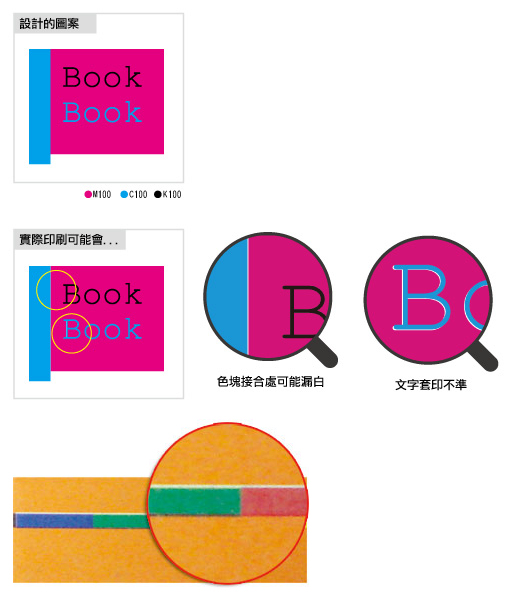② 要怎麼避免呢？ ◆避免不同色版的大色塊相臨設計，並避免將非K100的細字放在完全不同色版的色塊上。 ◆若真的必須作類似的設計，可以運用淺色色塊「漲邊」與設定「疊印筆畫」技巧，降低「露白」的情況。
① 當設計者使用透明度特效增加設計美感時，請務必留意文字或向量圖稿的編排！如背景圖檔（包含有透明背景的點陣圖、濾鏡）因透明特效若設計者沒有留意到物件之間的順序編排是否正確，可能會導致RIP解譯不正常。
② 發稿前請再次檢查物件的順序，將向量文字與物件移至最前。
③ 完稿時，請漸層、透明度等特效點陣化，以免發生成品與預期不同。
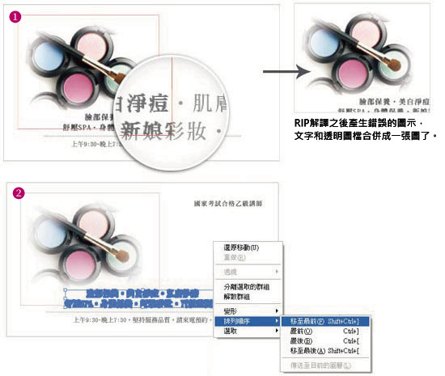重要圖文建議離裁切線3mm以上。
① 深色稿件如需加工時，常見的問題為軋型或裁切的邊緣易露白。
② 印刷成品若是滿版、深色時，由於與紙張白色纖維的對比明顯，很容易在折口、裁切口看出紙張纖維撕裂。
印刷品容易在加工、裝箱以及運輸的過程中相互摩擦產生產生髒污，建議客戶在紙張表面做上光處理，可以減少此問題的產生。
重要文字或LOGO盡可能不要與後加工稿件重疊，避免後加工覆蓋到印紋。
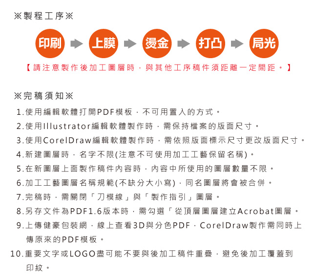2018 All Rights Reserved.